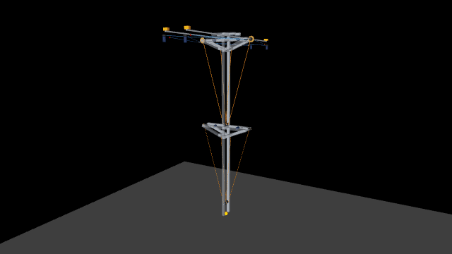

Robotic shoulder — big arm, small motors
A 4.8 m two-stage arm that moves 50 kg with two windshield-wiper motors (~50 W each), thanks to a self-locking 1:50 worm gear and a chain, winding steel cables. Simulated in MuJoCo.

- Synchronized cables: never slack, whatever the direction of the load
- DC-motor curve, rotor inertia, brakes, steel cables with real stiffness
- Cart on rails + turntable, reachable-volume halo and automatic sweep
Run it yourself: pip install mujoco numpy pillow then python live.py —
source on GitHub.